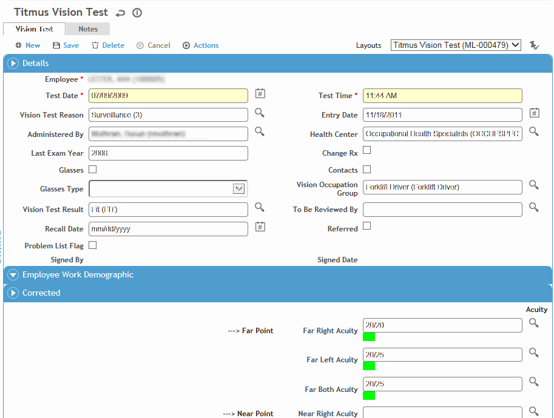

In the Occupational Health menu, click Vision and use the provided fields to filter the list of employees who have had vision tests.
Select a sample from the list by clicking on the employee name, or click New to record a new vision test.
Complete the vision test form (Titmus form shown):

Most of the fields are self-explanatory, but keep in mind the following:
The Occupation Group you choose will be used as the criteria for comparing this employee’s results — leave the field blank to not have comparisons performed.
As you enter results, they will be compared to the Occupation Group — a green square indicates the result “passes”; a red square indicates the result is a “fail”; and a yellow square indicates the result is a “warn”. The criteria for the occupation group is defined in the VisionCriteria look-up table.
If the test is being performed on an employee’s corrected vision (i.e. with the aid of corrective lenses such as glasses or contact lenses), enter the results in the Corrected section.
If the test is being performed on an employee’s uncorrected vision (without corrective lenses, usually used for a baseline exam), enter the results in the Uncorrected section.
Select the practitioner responsible for reviewing this record. Once that practitioner signs the record (Actions»Sign), the record becomes locked from further edits.
Indicate if the restriction should be included on the Problem List (see Working with the Problem List).
The Notes tab allows you to record additional information that does not fit elsewhere in the form. For more information, see Adding Notes to a Form.
Use the Documents tab to link an external file to the record to provide easy access to the file (for more information, see Linking or Importing a Document).
The Letters tab allows you to view past letters or generate new letters to employees. Form letters are stored in the LettersTemplate look-up table. For information about creating letters, see Generating a Letter.
Click Save. The test results appear on the Vision Tests List.